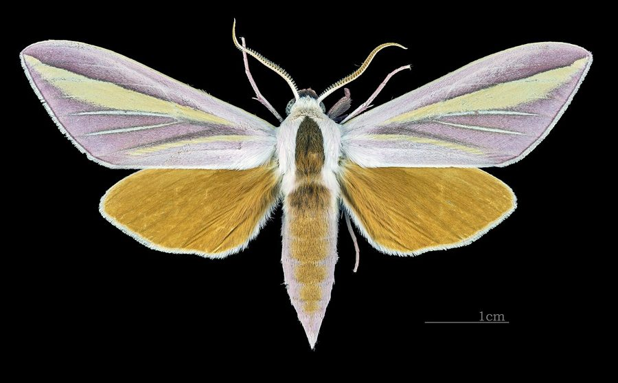

गुलाबी-पीली धारी हॉकमॉथLarge Candy-striped Hawkmoth
Leucophlebia lineata · Sphingidae · INS-0317

- Scientific name वैज्ञानिक नाम
- Leucophlebia lineata Westwood, 1847
- Family कुल
- Sphingidae
- Hindi हिंदी
- गुलाबी-पीली धारी हॉकमॉथ
- Local names स्थानीय नाम
- large candy-striped hawkmoth, candy-striped hawkmoth
- Status here यहाँ की स्थिति
- native
- Movement आवागमन
- Resident, here all year
- Known from कहाँ दर्ज
- Others have published records from the wider Awadh–Purvanchal plain, none yet from Basti–Ayodhya अवध–पूर्वांचल से दूसरों के प्रकाशित अभिलेख, बस्ती–अयोध्या से अभी नहीं
- IUCN IUCN
- not evaluated
- Review समीक्षा
- not yet reviewed
When to look कब देखें
Present all year. साल भर मौजूद।
गुलाबी-पीली धारी हॉकमॉथ / Large Candy-striped Hawkmoth
Leucophlebia lineata Westwood, 1847 — Sphingidae
गुलाबी-पीली धारी हॉकमॉथ — यह चमकदार गुलाबी और पीले रंग का एक सुंदर हॉकमॉथ है। इसके अगले पंख चमकदार गुलाबी होते हैं जिन पर आधार से सिरे तक एक चौड़ी पीली धारी जाती है, और पिछला पंख पीला-भूरा होता है। इसकी इल्ली हरी होती है जिसके किनारों पर चौड़ी सफेद पट्टी और सिर पर गुलाबी धारी होती है।
Quick Identification त्वरित पहचान
| Feature | Description |
|---|---|
| Wingspan | Female 70 mm, male 80 mm (Hampson 1892, p. 75) |
| Head & body | Palpi and frons brown; antennae ochreous; vertex of head and sides of thorax and abdomen pale pink; brownish ochreous stripe on vertex of thorax and abdomen (Hampson 1892, p. 74) |
| Forewing | Bright pink; a yellow stripe from the base of cell to apex, widest beyond the cell; a short narrow yellow streak in the interno-median interspace from the base; veins 2, 3, and 4 white with some diffused fuscous below them (Hampson 1892, p. 74) |
| Hindwing | Tawny; cilia yellowish white (Hampson 1892, p. 74) |
| Form rosacea | Smaller and darker than typical lineata, from South India and Ceylon (Hampson 1892, p. 75) |
Field tip: Look for a bright pink hawkmoth with a broad yellow stripe from the base to the apex of the forewing, white veins 2–4, and brown palpi and frons (Hampson 1892, p. 74).
हिंदी: इसकी मादा के पंखों का फैलाव 70 मिमी और नर का 80 मिमी होता है। चमकदार गुलाबी अगले पंख पर पीली धारी और सफेद नसें इसकी मुख्य पहचान हैं।
Morphology आकारिकी
Biometrics:
| Measurement | Range | Source |
|---|---|---|
| Expanse (female) | 70 mm | Hampson (1892, p. 75) |
| Expanse (male) | 80 mm | Hampson (1892, p. 75) |
Hampson (1892, p. 74) describes the moth: "Palpi and frons brown ; antennae ochreous ; vertex of head and sides of thorax and abdomen pale pink ; a brownish ochreous stripe on vertex of thorax and abdomen. Fore wing bright pink ; a yellow stripe from the base of cell to apex, widest beyond the cell ; a short narrow yellow streak in the interno-median interspace from the base ; veins 2, 3, and 4 white, with some diffused fuscous below them. Hind wing tawny. Cilia yellowish white."
Hampson (1892, p. 75) notes the form rosacea: "The form rosacea, from S. India and Ceylon, is rather smaller and darker than typical lineata."
Larval Stage
Hampson (1892, p. 75) describes the larva: "Larva green covered with tubercles ; a broad white lateral stripe ; head white, with a pink streak on genae ; horn and legs pink."
हिंदी: हैंपसन (1892) के अनुसार इसके वक्ष और पेट के बीच में भूरी-गेरुई धारी तथा किनारों पर हल्का गुलाबी रंग होता है। इसकी इल्ली हरी होती है जिस पर सफेद पार्श्व पट्टी और गुलाबी सींग व पैर होते हैं।
Behaviour & Ecology व्यवहार और पारिस्थितिकी
Not available in consulted sources.
हिंदी: इसके व्यवहार और पारिस्थितिकी का विस्तृत विवरण देखे गए स्रोतों में उपलब्ध नहीं है।
Life Cycle / Phenology जीवन चक्र
Not available in consulted sources.
हिंदी: इसके जीवन चक्र और मौसमी गतिविधि का विवरण देखे गए स्रोतों में उपलब्ध नहीं है।
Host Plants or Prey आहार
Not available in consulted sources.
हिंदी: इसके भोजन-पौधों का विवरण देखे गए स्रोतों में उपलब्ध नहीं है।
Predators / Natural Enemies शत्रु
Not available in consulted sources.
हिंदी: इसके प्राकृतिक शत्रुओं का विवरण देखे गए स्रोतों में उपलब्ध नहीं है।
Agricultural / Human Relevance कृषि प्रासंगिकता
Not available in consulted sources.
हिंदी: इसके कृषि या मानव महत्व का विवरण देखे गए स्रोतों में उपलब्ध नहीं है।
Expected Locally स्थानीय रूप से अपेक्षित
Not a field record. Written from published accounts for eastern Uttar Pradesh. No confirmed local sighting yet — if you have seen it, that is what the atlas needs.
अभी तक स्थानीय पुष्टि नहीं। यह विवरण प्रकाशित स्रोतों से है, किसी अवलोकन से नहीं।
Hampson (1892, p. 75) lists its localities as Chekiang, Nepal, Cachar, South India, Ceylon, and Java, without naming the United Provinces or the Gangetic plain. GBIF holds published records from the wider Awadh–Purvanchal plain, none yet from Basti–Ayodhya: two photographed records from Lakhimpur Kheri on 23 July 2025, by two observers on the same day in Dudhwa. A first local record would be a clear photograph showing the bright pink forewing with the broad yellow stripe and white veins with place and date, sent through the About page.
हिंदी: हैंपसन (1892) ने इसके विवरण में संयुक्त प्रांत या मैदानों का नाम नहीं दिया है, बल्कि नेपाल, कछार और दक्षिण भारत का उल्लेख किया है। जीबीआइएफ (GBIF) में लखीमपुर खीरी (दुधवा) से दो अभिलेख हैं, पर बस्ती या अयोध्या से अभी कोई अभिलेख नहीं है।
Distribution वितरण
Global range: Hampson (1892, p. 75) gives: "Chekiang; Nepal; Cachar; S. India; Ceylon; Java."
In India: Hampson (1892, p. 75) lists Cachar and South India (and does not name the United Provinces or the plains).
In Uttar Pradesh: GBIF holds two photographed records from Lakhimpur Kheri (23 July 2025, two observers on the same day in Dudhwa).
In Basti district / eastern UP: GBIF holds no record from Basti or Ayodhya.
हिंदी: हैंपसन (1892) के अनुसार यह चेजियांग, नेपाल, कछार, दक्षिण भारत, श्रीलंका और जावा में पाया जाता है। उत्तर प्रदेश में जीबीआइएफ पर लखीमपुर खीरी के दुधवा से दो अभिलेख हैं, पर बस्ती और अयोध्या से कोई अभिलेख नहीं है।
Research Questions शोध प्रश्न
Anyone can investigate these | कोई भी इन प्रश्नों की जाँच कर सकता है
- Does Leucophlebia lineata occur in Basti and Ayodhya districts, given the 2025 records from Dudhwa in Lakhimpur Kheri? / क्या बस्ती और अयोध्या जिलों में गुलाबी-पीली धारी हॉकमॉथ मिलता है?
- In which months are adults active in the northern terai and plains of Uttar Pradesh? / उत्तर प्रदेश के तराई और मैदानी क्षेत्रों में यह पतंगा किन महीनों में सक्रिय रहता है?
- Which larval food-plants does Leucophlebia lineata use in northern India?
- How far south from the terai belt does this hawkmoth extend into the Awadh plain?
- Can a child spot the bright pink and yellow stripe pattern on a resting hawkmoth without catching it? (No equipment needed.)
हिंदी: कोई भी व्यक्ति बिना किसी उपकरण के बैठे हुए हॉकमॉथ के पंखों पर चमकदार गुलाबी और पीली धारी को आसानी से पहचान सकता है।
Similar Species मिलती-जुलती प्रजातियाँ
| Species | How to tell apart | हिंदी |
|---|---|---|
| Leucophlebia emittens | Palpi and frons pink (not brown); forewing yellow streak broader and extending below the cell; veins 2, 3, and 4 yellow without fuscous below them; outer margin of hindwing narrowly pink (Hampson 1892, p. 75, entry 101) | गुलाबी माथा, कोशिका के नीचे तक चौड़ी पीली धारी और पीली नसें |
Field rule: A bright pink hawkmoth with brown palpi and frons, a yellow forewing stripe widest beyond the cell, and white veins 2, 3, and 4 with diffused fuscous below them is Leucophlebia lineata (Hampson 1892, p. 74).
हिंदी: भूरा माथा, चमकदार गुलाबी अगले पंख पर पीली धारी और सफेद नसें गुलाबी-पीली धारी हॉकमॉथ की पहचान हैं।
Taxonomy & Classification वर्गीकरण
Original description. Westwood, J. O. (1847). The Cabinet of Oriental Entomology, p. 46, pl. 22, fig. 2 (cited in Hampson 1892, p. 74).
Subspecies. Not available in consulted sources. Hampson (1892, p. 75) treats Leucophlebia rosacea Butler as a smaller, darker form from South India and Ceylon.
Family and order placement. Order Lepidoptera, family Sphingidae, genus Leucophlebia (Hampson 1892, p. 74, entry 100). Other atlas members of Sphingidae include Oleander Hawkmoth (Daphnis nerii) and Convolvulus Hawkmoth (Agrius convolvuli).
Phylogenetic notes. Placed in Leucophlebia and Sphingidae by both Hampson (1892, p. 74) and GBIF.
IUCN status rationale. Not evaluated on the IUCN Red List.
हिंदी: इसका पहला वैज्ञानिक वर्णन वेस्टवुड (1847) ने किया था। यह Sphingidae कुल और Leucophlebia वंश की प्रजाति है।
Photo Gallery फोटो गैलरी
No photos yet — add field photos to media/species/large_candy_striped_hawkmoth/ and run node scripts/sync_photos.js.
Photos needed आवश्यक फोटो
- [ ] Dorsal view showing the bright pink forewings and yellow stripes (ऊपरी सतह, गुलाबी पंख और पीली धारी दिखाता चित्र)
- [ ] Head and thorax view showing the brown frons and ochreous dorsal stripe (सिर और वक्ष की धारी दिखाता चित्र)
References संदर्भ
- Westwood, J. O. (1847). The Cabinet of Oriental Entomology, p. 46, pl. 22, fig. 2 (cited in Hampson 1892, p. 74).
- Hampson, G. F. (1892). The Fauna of British India, including Ceylon and Burma. Moths. Vol. 1 (pp. 74–75). Taylor and Francis, London.
- GBIF Occurrence Data — Leucophlebia lineata Westwood, 1847, India (2025).
Source file: species/fauna/insects/large_candy_striped_hawkmoth.md